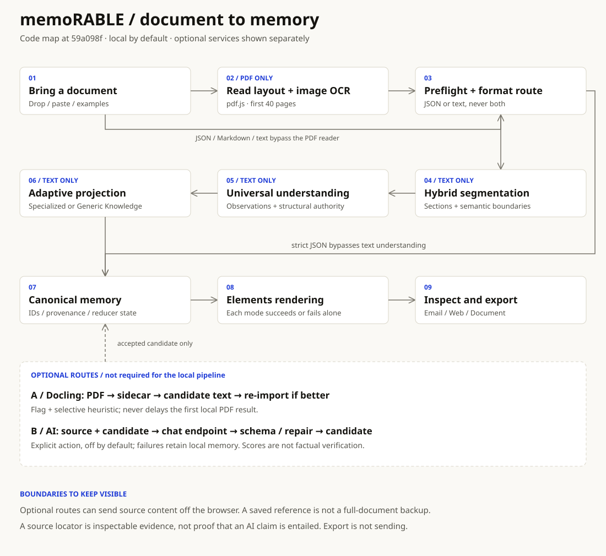

MEMORABLE / ARCHITECTURE FIELD GUIDE
One source.
Memory you can inspect.
Trace a document from import to source-linked blocks, then Email, Web and Document. Open a stage for its code, decisions and failure boundaries.
Code map at 59a098f, 17 October 2026. Documentation only; the application UI is unchanged.
PDFs become text, JSON takes a strict schema path, and prose goes through semantic understanding. Both paths meet at one canonical memory document. Docling and AI are separate opt-in routes, not prerequisites.
This guide makes no network calls and needs no key.

The wide overview is supplemental. On a phone, every stage and privacy boundary is readable in the guide below. Solid arrows are the default route; dashed arrows are optional refinement.
Read and route
01Bring a documentPDF, JSON, Markdown or plain text
Dropped files, pasted text and examples enter the client workbench. PDF reading is local by default. Enabling Docling or explicitly requesting AI improvement can send content off the browser; local-first does not mean every optional route stays local.
Choose the optional routes deliberately; do not treat browser-only processing as a blanket privacy promise.
src/components/import/import-panel.tsxsrc/components/workbench.tsx02Read layout and embedded imagesPDF-only branch; first 40 pages
pdf.js reconstructs reading order and tables. Embedded images can be OCR candidates; pure text PDFs skip image OCR. The reader intentionally processes at most 40 pages, and reports truncation. The result joins the ordinary text import path.
A PDF beyond page 40 is incomplete input. Split it rather than assuming all pages were remembered.
03Validate, then choose one pathJSON never falls through to text
Preflight guards size, encoding and binary content. Leading { or [ selects strict JSON import. Invalid JSON fails instead of silently becoming prose. Text and Markdown use the local parser. Failed imports preserve the last successful document.
JSON is schema input, not raw prose. Its blocks bypass semantic text understanding.
Understand and preserve
04Segment meaning and structureText path only
Hybrid segmentation combines structural anchors with topic shifts rather than fixed token windows. A document graph records sections and relationships. The parser keeps source lines for later locators and evidence inspection.
A document graph is a representation of the source, not a separate model answer.
src/understanding/segment.tssrc/import/text/parse-text.ts05Understand before arrangingUniversal observation kinds
The local understanding layer distills statements and infers signals, decisions, risks, timeline entries and actions. Structural parsers enrich those observations and have same-line authority. Resume, Invoice and Research scores choose specialized furniture only when the score and margin pass. Generic Knowledge is the fallback.
Inferences are not automatically explicit facts. Follow the preserved sentence or source locator.
06Project into memory blocksAdaptive names; one strict schema
Projection adapts labels and empty-bucket policy to the document. Resume and invoice facts stay extractive; generic documents can include synthesized insights. Research can carry a TypeScript-built Graphify-schema knowledge graph without waiting for the Docling sidecar. Canonicalization and hashes give blocks stable identities.
A specialized label changes presentation, not the source evidence. Six block kinds do not guarantee six useful populated cards.
07Keep one canonical documentReducer + source-linked inspection
The reducer owns the canonical document, output mode, errors and per-mode last-good output. Reordering preserves block identities and provenance. A four-entry LRU caches rendered outputs. Optional local storage saves a document reference, not the full source or a durable backup of all memories.
Memory here is a product data model. Do not assume every imported document survives a reload.
Render and export
08Render each output independentlyEmail, Web and Document
Block renderers produce Unlayer Elements rows. Direct Email, Page and Document roots generate HTML and validated design JSON separately for each mode. A failed block gets a recovery row; a failed mode does not remove the other modes. Preview HTML runs in an sandboxed iframe without script execution.
Same underlying memory reduces rewriting; it does not promise pixel-identical output across formats.
09Inspect, then exportDownloads and print workflow
The publish panel exposes the generated outputs, source bundle and print options. This is export from the same document, not an automatic email send or remote website deployment. Source and provenance remain available for inspection.
A downloaded file is an output artifact. Sending or hosting it is a separate action.
Optional routes and their boundaries
AOptional Docling refinementBackground PDF path, off by default
NEXT_PUBLIC_DOCGRAPH=1 permits selected research-like, long or table-heavy PDFs to go through /api/docgraph to the Python sidecar. Resume and Invoice are excluded. pdf.js renders first. The callback re-imports the candidate and accepts it only when a heuristic quality check improves the research result. The sidecar uses a SHA-256 parse cache.
Refinement is heuristic, not proof of correctness. Failure or a changed source keeps the current local result.
BOptional AI improvementExplicit action; server-only credentials
ENABLE_AI=true plus OPENAI_API_KEY enables /api/extract. The user action sends source text and a local candidate to an OpenAI-compatible chat endpoint. The v6 path parses observations, repairs them, projects to the strict memory schema and may retain the local candidate when its quality score is higher. Legacy MemorySource output is also schema-checked.
45-second deadline, no automatic retries. AI is off by default. Preserved locators do not prove new AI claims are supported by those lines.
What to verify when something looks wrong
Start with the imported text and its page limit. Then check the format route, source lines, archetype scores and projected blocks before inspecting rendering. An output problem is not necessarily an extraction problem.
Neither a quality score nor a preserved source locator proves an AI claim is true. The local-storage reference is not a full-document backup. Exporting is not sending.
Architecture reference · Reliability boundaries · Sidecar setup